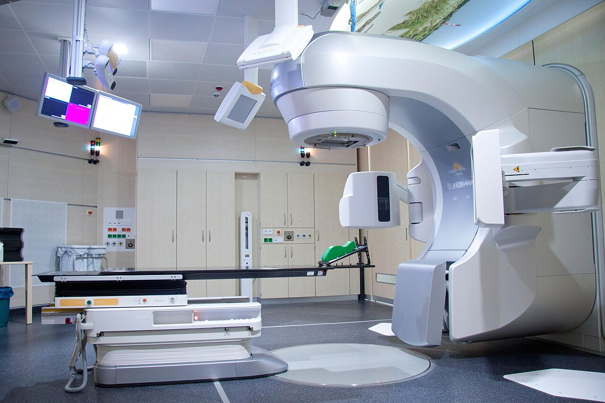

Evidence-based oncology modality coordinated by board-certified specialists, designed for precise cancer clearance and quality of life preservation.

Our multidisciplinary team customizes every cycle based on genomic sequencing, anatomical staging, and organ preservation goals.
From initial pathology verification to cycle recovery, your care follows an unbroken clinical roadmap designed to ensure safety and comfort.
Our multidisciplinary tumor board confirms outside biopsy glass slides, scans, and molecular biomarker suitability.
Protective anti-nausea agents and organ-shielding infusions administered 30 minutes ahead of scheduled dosing.
Administered in private garden-view suites or stereotactic vaults under continuous telemetric nurse observation.
Dedicated oncology nurse navigators call within 24 hours to track recovery, review labs, and answer family questions.
Common clinical and practical inquiries regarding this treatment modality.